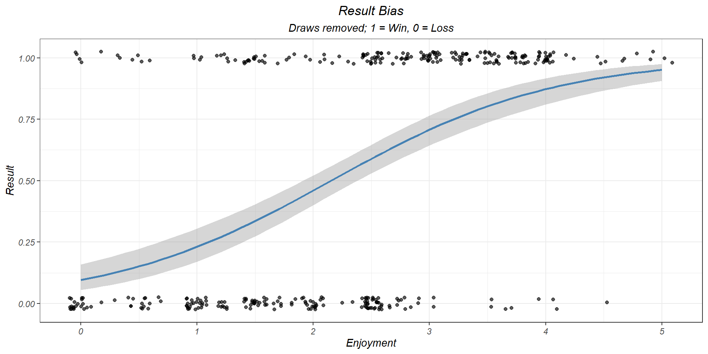

rustynumbnut
Map Rankings
Enjoyment & Result Bias
Winrate and enjoyment are strongly correlated

Variability throughout the week

Does winrate vary throughout the week?
## Analysis of Deviance Table (Type II tests)
##
## Response: cbind(Win, Loss)
## LR Chisq Df Pr(>Chisq)
## Weekday 8.2136 6 0.2229Flex queue: Role probability throughout the week
Does winrate vary between time of day?
Morning: 8AM <= Time < 12PM
Afternoon: 12PM <= Time < 5PM
Evening: 5PM <= Time < 12AM
Night: 12AM <= Time < 8AM
## Analysis of Deviance Table (Type II tests)
##
## Response: cbind(Won, Lost)
## LR Chisq Df Pr(>Chisq)
## TimeBracket 9.9053 3 0.01939 *
## ---
## Signif. codes: 0 '***' 0.001 '**' 0.01 '*' 0.05 '.' 0.1 ' ' 1Lobby Rank vs Actual Rank
Rank disparity is calculated from (ActualRank - LobbyRank)
Therefore, positive disparity is Favoured, negative disparity is
Underdog
Lobby Summary
A “streak” is defined by 3 consecutive wins or losses.
If you queue when you’re on a streak, what are the quality of the
lobbies you get?
WinStreak_n = Number of games played while on a win streak
LossStreak_n = Number of games played while on a loss streak
%LossStreak = Percent of Loss streak games played
Rank over time
A “tour” is in reference to the win-loss record in-game, where either 5
wins or 15 losses are needed to readjust rank
Example: Tour 4.12 means Season 4, tour 12